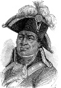

Modern zamanların ilk başarılı köle isyanı Toussaint L’Ouverture (1743–1803) tarafından organize edilmişti. Haitili bir köle olarak başlattığı isyan, Fransızların Karayip Adaları’ndan atılmasını sağladı. Özgür ve siyahi bir cumhuriyet olarak bağımsızlığını kazanmasının ardından Haiti, Kuzey ve Güney Amerika’daki siyahi köleler için bir umut kaynağı oldu.
Gerçekten de L’Ouverture bir Fransız hapishanesindeki ölümünün üzerinden 200 yıl geçmiş olmasına rağmen siyahi özgürlük hareketi ve anti emperyalist direnişçiler tarafından bir kahraman olarak görülmektedir. Güney Afrika başkanı, 2004 yılında Haiti isyanını anti-apartheid hareketin ilham kaynağı ve “tarihteki en büyük devrimlerden biri” olarak adlandırmıştır.
19. yy’ın Amerikalı ve Avrupalı beyazları içinse “Siyahi Napolyon” olarak bilinen bu adam fazlasıyla tehditkardı. Ölümünden on yıllar sonra bile Fransa’da bir korku kaynağı olmuştur. ABD, 1862’ye kadar Haiti’nin bağımsızlığını tanımamıştır.

L’Ouverture hayatının ilk yıllarında bir plantasyonda at yetiştiricisi olarak çalıştı. O zamanlar adı Saint-Dominque olan Haiti, büyük bir şeker kamışı üreticisiydi. Bu durum Fransa için önemli bir zenginlik kaynağıydı. Tüm bunların temelinde zorlu tropik iklimde çalışan kölelerin emeği vardı.
1789 yılındaki Fransız Devrimi’nin idealleri olan özgürlük, eşitlik ve kardeşlik pek çok siyahiye köleliğin kaldırılacağı ümidini vermişti. Ancak köle sahipleri buna yanaşmadılar. Bunun üzerine 1791 yılında isyan patlak verdi.
L’Ouverture’ün amacı köleliği kaldırmaktı. Bağımsızlığı planlamamıştı. Gerçekten de ölene kadar kendisini bir Fransız olarak gördü. Ancak 1801 yılında kendisine ömür boyu vali rolü tanıyan anayasanın ilanıyla birlikte ülke açıkça bağımsızlık yoluna girmişti.
1802 yılında Fransız kuvvetleri tarafından yakalandı. Fransa’da hapsedildi. Alpler’deki soğuk bir hapishanede aylarca süren zorlu sorgunun ardından öldü. Ertesi yıl Saint-Dominque’den son Fransız askerleri de çekildi. Nihayet bağımsızlık ilan edildi ve ülke yeniden Haiti adını aldı. Haiti, ABD’den sonra Yeni Dünya’daki ikinci bağımsız ülke oldu.
Ek Bilgiler
1- Haiti’nin başkenti Port-au-Prince’deki en büyük havaalanı 2003 yılında, yani devrimci liderin 200. ölüm yıl dönümünde L’Ouverture adını aldı.
2- Haiti’nin bağımsızlığının Amerika Birleşik Devletleri tarihi üzerinde dolaylı da olsa büyük bir etkisi vardı. Haiti’yi kaybeden Napolyon Bonaparte (1769-1821) büyük bir Amerikan imparatorluğu kurma hayallerinden vazgeçti. Amerika’daki son topraklarını da ABD’ye satma kararı aldı. Bu olaya “Louisiana Satışı” adı verilmektedir.
3- 1935 yılında Amerikalı yönetmen Orson Welles (1915–1985) Macbeth’in siyah-beyaz versiyonunu çekti. Filmdeki “Macduff” karakteri L’Ouverture’dan esinlenmiştir.